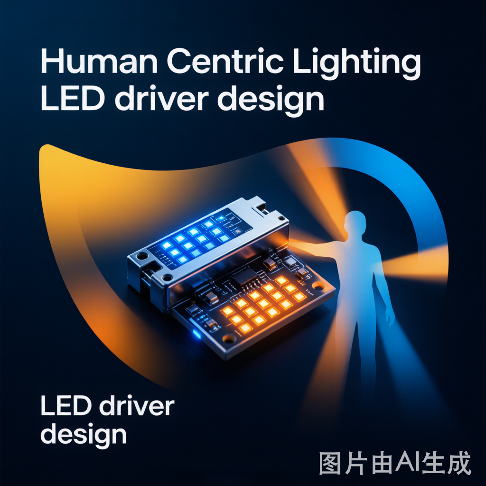

You bought a "circadian light." The app offers sunrise mode, daytime mode, sleep mode — color temperature ranges from 2700K to 6500K. Looks professional. But after two weeks, you notice: sleep mode still feels glaring; the morning auto-brightness switch hits like a flash; at 2 AM, that "warm" light flickers subtly.
This isn't Human Centric Lighting. This is an app with a color temperature slider.
The 2026 Guangzhou International Lighting Exhibition dedicated a whole section to "Biology: Health & Circadian Rhythm." EU regulations now mandate smart lighting in new buildings. Industry white papers predict HCL will become the core growth driver of a trillion-dollar market. But how many "circadian lights" consumers actually buy deserve that name?
The Essence of HCL: More Than "Adjustable Color Temperature"
Human Centric Lighting (HCL) means light that follows your biological rhythm:
- Morning: High CCT (4000-6500K) + high illuminance — suppresses melatonin, helps you wake up
- Afternoon: Medium CCT (3500-4000K) + medium illuminance — maintains focus
- Evening: Low CCT (2700-3000K) + decreasing illuminance — promotes melatonin secretion
- Night: Very low CCT (1800-2200K) + minimal illuminance — sleep-friendly, non-disruptive
The key is seamless gradual transition — not jumping from 6500K to 2700K in one click, but slowly transitioning like real sunrise and sunset. Your body needs 20-30 minutes of gradual CCT change to adjust hormone secretion. Instant switching triggers a stress response instead.
LED Drivers: The Real Bottleneck of Circadian Lights
90% of "circadian light" problems stem from the driver. True HCL requires the driver to meet three hard requirements:
1. Dual-Channel Seamless Color Mixing
HCL isn't switching between a cool-white LED and a warm-white LED. It's simultaneously driving both cool and warm channels at proportional ratios at every CCT point. This requires:
- Dual independent constant-current outputs: Cool channel and warm channel, each independently adjustable from 0-100%
- Color mixing algorithm: Precisely calculating cool/warm ratios for target CCT, not simple linear叠加
- Smooth transitions: When CCT gradually changes, cool channel slowly decreases while warm channel slowly increases — no jumps in between
Many cheap drivers have only one output channel, using a MOSFET to switch between cool and warm LEDs — resulting in CCT jumps, missing intermediate tones, and transitions that feel like flipping pages.
2. 0.1% Deep Dimming
Night sleep mode needs illuminance down to 1-5 lux, equivalent to driver output dropping from 100% to below 0.1%. Standard PWM dimming below 5% produces:
- Increased flicker: Low duty cycle causes perceptible strobing
- CCT shift: Cool/warm mixing ratios distort at low brightness
- Start-up delay: From off to 0.1% brightness can take hundreds of milliseconds of blackout
True HCL drivers need hybrid analog + digital dimming: PWM for efficiency at high brightness, analog dimming (current reduction) for flicker-free performance at low brightness. This technology is currently mastered by only a few specialized driver manufacturers.
3. 24-Hour Gradient Curves
One-click app switching isn't HCL. True circadian lights need drivers supporting scheduled gradient curves — e.g., starting at 2200K/5 lux at 6:00 AM, gradually transitioning to 5000K/300 lux over 30 minutes, then reversing at 6:00 PM.
This requires:
- Timeline programming: At least 8 time segments with CCT/illuminance gradient settings
- Gradient rate control: Smooth transitions adjustable from 0.5 to 30 minutes
- Cloud sync: Local execution of gradient curves, no interruption when offline
Tuya's Zigbee dimming solution already supports this curve programming, but the prerequisite is that the driver's dimming resolution is sufficiently high.
Three Hard Standards for Buying Circadian Lights
Next time you see "circadian light," "HCL," or "eye-protection light" labels, check these three things:
① Driver type: Dual-channel constant current or single-channel switching? If specs say "dual color temperature switching" — likely a single-channel switching driver with CCT jumps. "Dual color temperature mixing" or "CCT continuously adjustable" — that's dual-channel constant current.
② Dimming depth: How low can brightness go?
Check specs or ask support: minimum brightness is 1% or 0.1%? At 1%, nighttime is still glaring (10 lux). 0.1% is what you need for true sleep-friendly light (1 lux).
③ Gradient mode: Manual switching or automatic curves? Apps with "one-click sleep mode" are pseudo-HCL. Apps with "sunrise/sunset auto-gradient" with adjustable transition times are true circadian lighting.
Bottom Line
HCL isn't a marketing gimmick — the science is solid. Light genuinely affects your melatonin, cortisol, and sleep quality. But whether a "circadian light" can deliver on that promise depends on the driver you can't see.
Dual-channel mixing, deep dimming, gradient curves — these three are the foundational support of HCL. Without any one, no matter how much you spend on the fixture, it's just a regular light with adjustable color temperature.
Next time you're shopping for a circadian light, don't look at how flashy the app is — look at how solid the driver specs are.